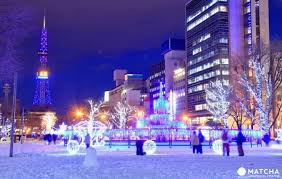
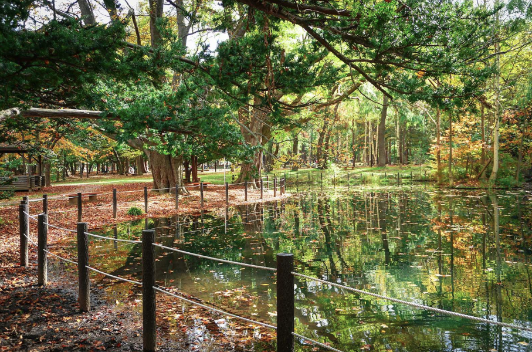
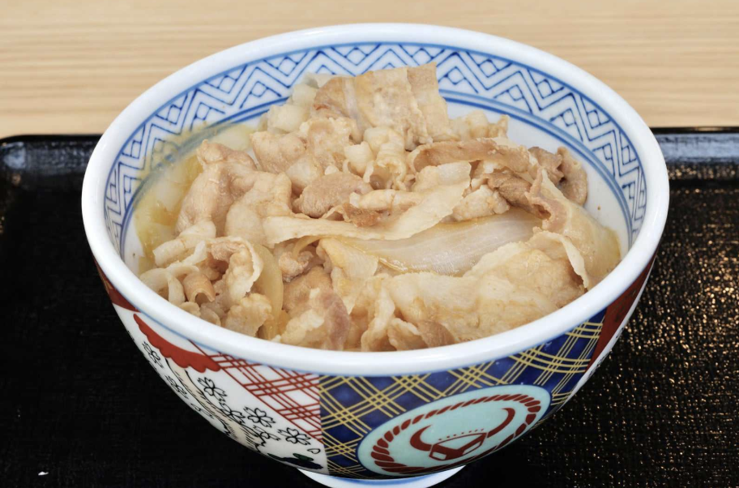
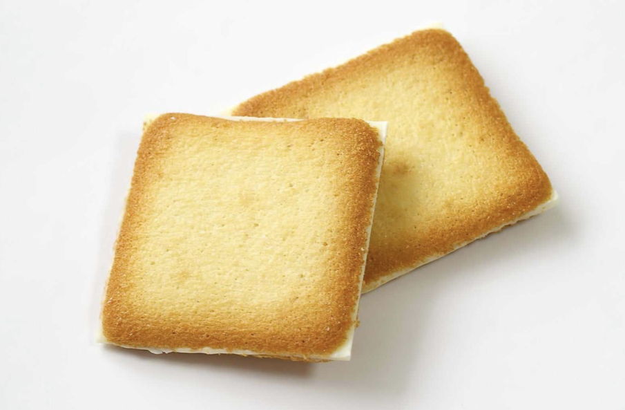
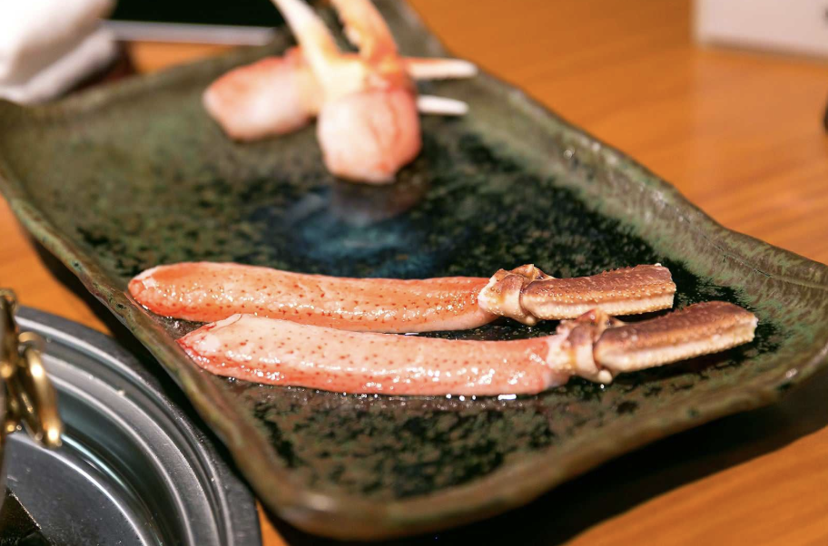

1. 삿포로는 어떤 곳인가 ?
삿포로는 일본 북쪽에 위치한 훗카이도의 중심 도시이다. 여행자들이 많이 방문하는 일본의 대표적인 관광 도시 중 하나이다.삿포로는 사계절이 뚜렷하게 나누어져 있다. 봄과 여름엔 꽃이 만발하고 가을에는 단풍, 겨울에는 설경을 볼 수 있다. 겨울 눈이 많이 내리는 것을 살린 눈 축제는 전국적으로 유명하다. 훗카이도의 입구로 불리는 신치토세 공항은 직항편이 많으며 도쿄에서도 쉽게 갈 수 있다. 훗카이도의 교통망은 삿포로를 중심으로 만들어져 있기 때문에 훗카이도의 다른 지역인 니세코와 후라노 등으로 이동하기도 용이하다.
2. 삿포로의 기후와 복장

1년 평균 143.5일 눈이 내리고, 긴 겨울이 특징인 삿포로. 겨울을 좋아하는 사람들에게 이보다 좋은 여행지는 없을듯하다. 이런 기후 때문에, 건물은 기밀성이 높아 실내 온도가 높고 제설 등 눈에 관한 대책이 잘 되어 있는것으로 알려져 있다. 무려 실내외 온도차가 20도가 난다고 한다 ! 그렇기 때문에 복장은 사계절 내내 입을 수 있는 복장이 좋다. 겨울에는 벗기 쉬운 복장이 좋으며 여름에는 가볍게 걸칠 수 있는 옷을 준비하고 외출하는 것이 좋다.
3. 삿포로에서 꼭 방문해야하는 곳
1. 오도리 공원

오도리 공원의 오도리는 큰 공원이라는 뜻을 가지고 있다. 이름에 걸맞게 너비 105m의 공원이 도시의 중심지에 위치해있다. 여름에는 길거리에 맥주를 팔고 먹거리 시장을 운영하며, 겨울에는 눈을 활용한 작품을 볼 수 있다. 축제도 많이 열리는데, 5월에는 라일락축제, 여름에는 비어축제, 겨울에는 눈 축제 등으로 시기 상관없이 관광객들을 즐겁게 해주는 장소이다.
2. 삿포로 TV 타워

147m 높이의 삿포로 TV 타워는 삿포로 시내를 굽어보는 자리에 있어 타워를 오르면 도시와 산의 전망이 한 눈에 펼쳐진다. 1957년에 지어져서 옛 정취를 느낄 수 있고 측면에 자리한 디지털 시계는 옛 느낌을 더해준다. 시시각각으로 변하는 빛을 감상할 수 있는 해질녘에 방문하는걸 추천한다.
3. 마루야마 동물원과 마루야마 공원
마루야마 동물원과 공원은 삿포로 서쪽에 자리한 녹지공원이다. 공원에 인접한 훗카이도 신궁의 경내는 봄이 되면 볼 수 있는 벚꽃의 절경으로 유명하다. 봄에 방문하면 꽃놀이를 즐기는 사람들을 볼 수 있다. 마루야마 동물원은 훗카이도에서 가장 큰 동물원으로 200종이 넘는 동물들을 만날 수 있고 많은 사람들의 사랑을 받는 곰 전시관은 꼭 가봐야하는 장소이다.
4. 삿포로의 먹을거리 !
1. 부타동
훗카이도 지역에서 가장 흔한 고기는 돼지고기이다. 이 요리는 훗카이도의 척박한 토지를 개척하는 초기 개척자들에게 큰 힘이 되었다고 한다. 또한 일본 최고의 쌀 생산지로 알려진 훗카이도의 쌀밥을 사용하는 부타동을 먹으면 훗카이도를 먹은거나 다름없다고 한다.
2. 시로이 코이비토
1976년에 탄생한 유명한 과자인 시로이 코이비토는 문자 그대로 해석하면 "하얀 연인" 이라는 뜻을 가지고 있다. 이 과자를 만든 사람이 삿포로의 하얀 눈을 보고 만들었다고 한다. 바삭한 랑그드샤 쿠키 사이에 화이트 초콜릿을 넣어서 만든 과자로 남녀노소 누구나에게 인기가 많다.
3. 가니샤브
게는 삿포로의 대표적인 해산물로 붉은 왕게, 털게 등의 많은 종류의 게를 접할 수 있다. 가니샤브는 게를 샤브샤브로 먹는 특이한 방식의 음식으로 부드러운 식감에 감칠맛이 좋아 관광객에게 인기가 많다. 따뜻한 육수에 껍질을 벗긴 게다리살을 담가 먹으며 다 먹은 후에는 일본식 전통 전골인 나베모노까지 즐길 수 있다.